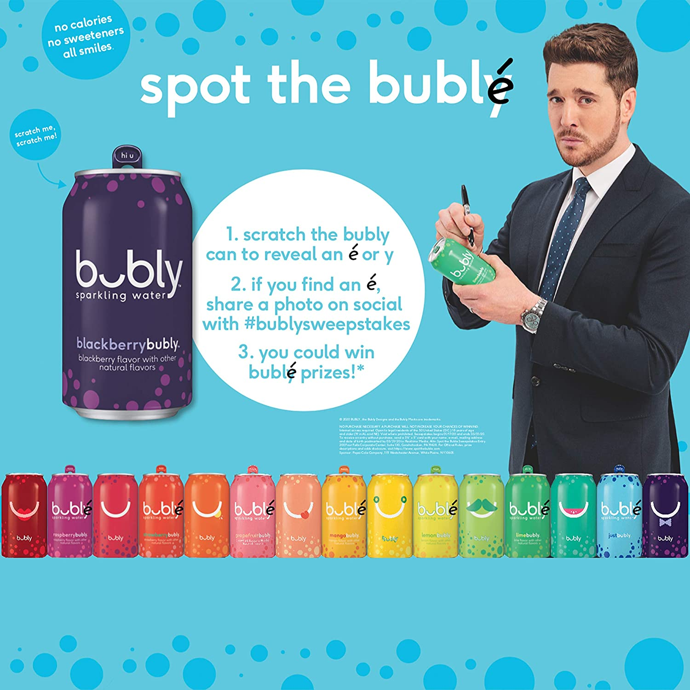

Recently, PEOPLE’s food & lifestyle director asked if I wanted to sample and write about a new bubbly line. Cheers to that! Who wouldn’t want to spend an afternoon sipping flutes of champagne by the likes of Veuve or Moet?
Turns out it was Pep-say. As in Pepsi’s new line of flavored sparkling water. First I have to admit: I’ve never liked seltzer and always found it flavorless. As far as I’m concerned, seltzer is only good for removing bloodstains or spraying someone after hitting them in the face with a pie (as one does in old movies and TV shows).